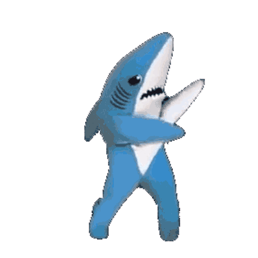
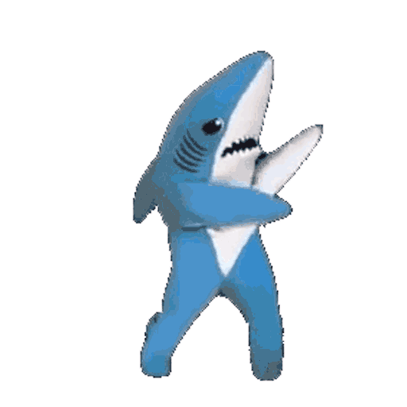
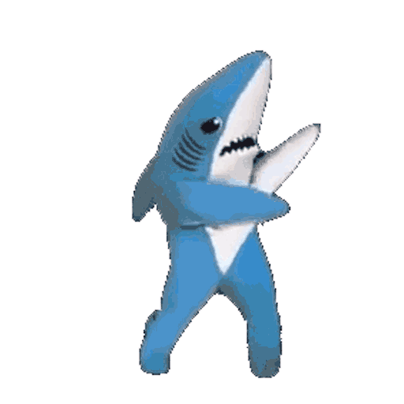

Friend Finder
Survey
Search Again

Welcome to Friend Finder
A place to meet other friends, like you!
Please fill out a few questions to match you with someone else
account_circle
add_a_photo
Question # 1: How much does music affect your personality?
Ohh Ohh, pick me!
1 - Not at all
2 - Meh, maybe a smidge
3 - Somewhat
4 - Kinda a lot
5 - I can be a different person
Question # 2: Do you think Crossfit is crazy or incredible?
Ohh Ohh, pick me!
1 - They push their bodies waaaay too much, not smart
2 - Probably not a good idea
3 - Might be OK, might be dangerous
4 - I am impressed
5 - Talk about peak physical health!
Question # 3: Computer coding is a way of life or a fun hobby?
Ohh Ohh, pick me!
1 - Nah, computers will do all the coding one day
2 - Not that important in the long run
3 - Nice to know, but it's alright if you don't
4 - Very important knowledge to have
5 - Nothing better than coding!
Question # 4: Do you consider Global Warming a real threat, or just a conspiracy?
Ohh Ohh, pick me!
1 - Just a scare tactic, nothing more
2 - Needs more research to justify
3 - I really don't know. It could be a little of both.
4 - We need to be aware of it.
5 - Check the news! It's happening! NOW!
Question # 5: Which is more important to you: facts or feelings?
Ohh Ohh, pick me!
1 - Feelings, nothing more than feelings
2 - Good to know a little bit, but my feelings are more important
3 - It's really a little of both
4 - Feeling are a little important, but facts are what move the world
5 - Just the facts. Feelings just get in the way.
Question # 6: Do you feel companionship is a necessity or an option
Ohh Ohh, pick me!
1 - I prefer to be on my own. Can't rely on others.
2 - It's alright if you're into that.
3 - I like it if avaliable, but don't mind if not
4 - Pretty much needed
5 - I could not be alone at all, not my jam
Question # 7: How much does social media affect your mood?
Ohh Ohh, pick me!
1 - I can get irate/estatic
2 - Very much so
3 - Depends on if I agree with it or not
4 - Not really, but only in extreme cases
5 - I couldn't care less
Question # 8: Is watching a movie fun or a waste of time?
Ohh Ohh, pick me!
1 - No thanks, I prefer the real world
2 - Maybe only once in a while
3 - I'll watch them on occasion
4 - Oh yes, please let me leave reality for a bit
5 - Gotta watch the latest and greatest (Opening night!)
Question # 9: Does reading a book put you to sleep or ignite your mind?
Ohh Ohh, pick me!
1 - zzzzzz, I think this question puts me to sleep
2 - Only read when it's something I really care about
3 - Depends on how I'm feeling
4 - Yeah, I read from time to time
5 - Stimulating. The way to learn and improve
Question # 10: Is watching the news more informative or depressing?
Ohh Ohh, pick me!
1 - Death, crime, politics. YUCK!
2 - News is slanted to the left or right
3 - I try to stay impartial and unbiased
4 - You do look smart if you know what's going on
5 - It is crutial to know the world around us
Submit
send
send
 
